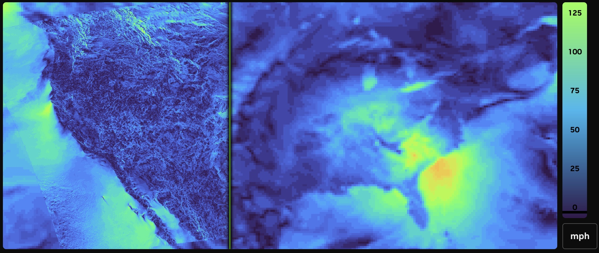
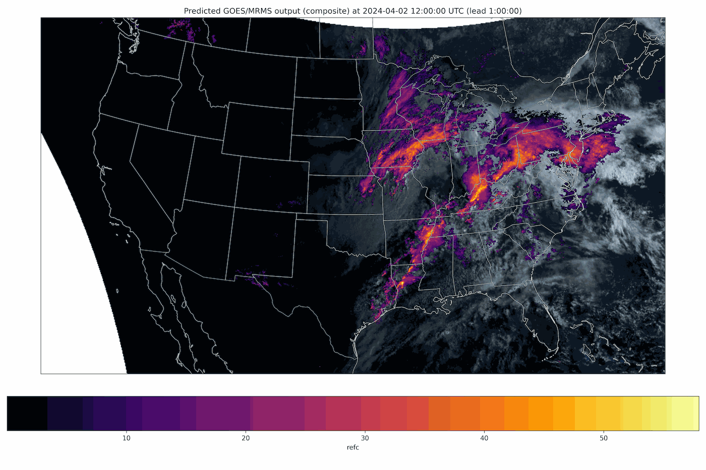
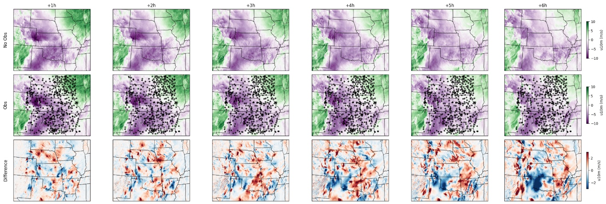
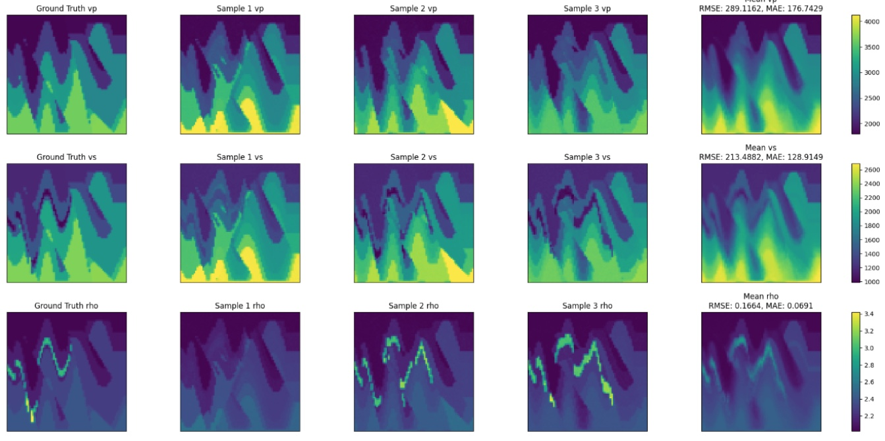
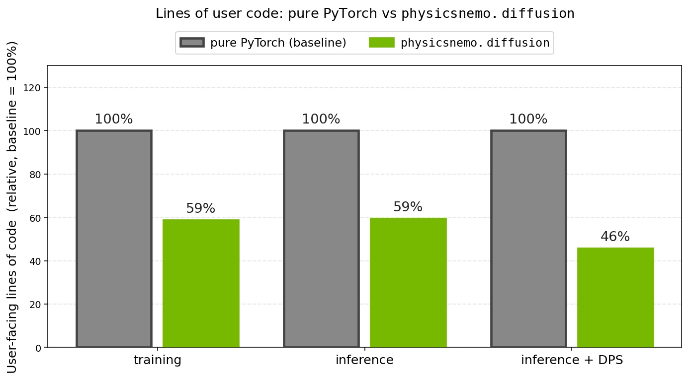
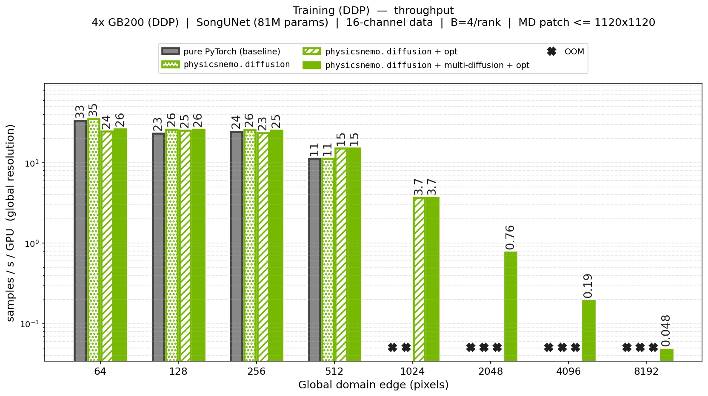
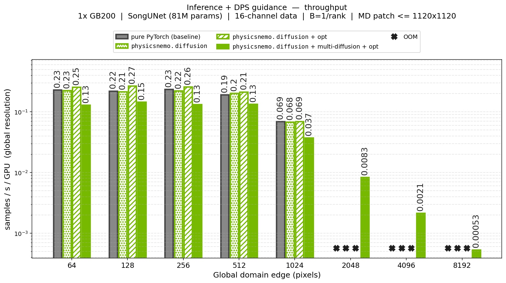

Introducing the PhysicsNeMo Diffusion Module: Composable, Extensible Generative Modeling for Physics-AI
In physics-AI, many problems have not a single answer but a distribution of possible ones, which is what diffusion models sample. The PhysicsNeMo diffusion module brings diffusion to scientific data, built on PyTorch and included in the open-source PhysicsNeMo library.
Its composable components range from ready-to-use defaults to fully custom research implementations, serving a CAE engineer, a weather modeler, and a diffusion researcher alike. They cover the whole workflow, from training a model to sampling from it. A single trained model then serves many tasks at inference, drawing large ensembles, solving inverse problems by sampling the posterior, and enforcing physical constraints, without retraining. The module is designed for high throughput on large ensembles and for scaling to the large domains typical of scientific applications. In this post, we'll show what the module unlocks, from large ensembles to data assimilation to physics-constrained generation, and how its abstractions fit together.

{kind=link}
From ensemble weather forecasts to turbulent flows, subsurface imaging to materials discovery, many of the hardest problems in physics-AI share a property that deterministic surrogates handle poorly: the answer is not a single field, but a distribution of plausible fields. A convection-allowing forecast admits many physically consistent realizations. A turbulent flow at a given Reynolds number is one draw from a vast space of states consistent with the same boundary conditions. A velocity model that explains a set of seismic recordings is rarely unique. The atomic arrangement of a disordered material consistent with a measured spectrum is one of many. In each case, what we know constrains the answer to a probability cloud, not a point.
Diffusion models are built for exactly this setting. They set the state of the art in image and video generation, and the same machinery learns to sample from the complex, high-dimensional distributions that arise in science. Just as important, they can be steered at inference time toward observations and physical constraints. That makes them a natural fit not only for probabilistic forward prediction (large ensembles and uncertainty quantification), but also for inverse problems (data assimilation and real-time state estimation) and for physics-informed generation (imposing constraints at sampling time, not only during training).
The PhysicsNeMo diffusion module is built to let a domain scientist assemble a working pipeline from off-the-shelf parts, while giving a diffusion researcher room to swap in a custom component and inherit the rest. We look under the hood at those abstractions and their design later in the post; first, what they make possible.
What the Module Unlocks
The clearest way to understand the module is through what it makes possible. For each capability below, we name the abstraction that enables it, point to an example that puts it to work, and sketch how it carries over to engineering applications.
Large Ensembles of Probabilistic Predictions
Chaotic systems such as the atmosphere or a turbulent flow are exquisitely sensitive to initial conditions, so a single prediction is rarely enough. An ensemble that traces out the spread of plausible outcomes is what matters. A diffusion model delivers this almost for free: every random seed is a fresh sample from the learned distribution, so a large ensemble is simply many independent draws. Those draws feed whatever is needed downstream, from uncertainty quantification to risk estimates to the statistics of rare events. Because the members are independent, generation is an embarrassingly parallel workload, and this is where inference throughput becomes decisive: the performance optimizations discussed later are what turn ensembles of hundreds or thousands of members from aspiration into routine.
The capability rests on two abstractions: the NoiseScheduler, the central component that governs how noise is added and removed, and the sample() function, the single entry point for generation. The scheduler initializes a batch of independent noisy states, and sample() integrates each one down to a clean field. Generating a 64-member ensemble from a trained model is a few lines:
from functools import partial
from physicsnemo.diffusion.noise_schedulers import EDMNoiseScheduler
from physicsnemo.diffusion.samplers import sample
scheduler = EDMNoiseScheduler() # ready-to-use EDM schedule
x0_predictor = partial(trained_model, condition=cond) # bind the conditioning
denoiser = scheduler.get_denoiser(x0_predictor=x0_predictor)
tN = scheduler.timesteps(num_steps=50)[0].expand(64) # 64 independent members
xN = scheduler.init_latents(state_shape, tN) # 64 noisy latents
ensemble = sample(denoiser, xN, scheduler, num_steps=50, solver="heun")
In production, this is the pattern behind StormCast and Stormscope. StormCast is a generative diffusion model that emulates NOAA's 3 km High-Resolution Rapid Refresh, autoregressively predicting kilometer-scale atmospheric state with realistic storm structure and radar reflectivity. Stormscope is a diffusion-only nowcasting model for clouds and precipitation, built on a diffusion transformer, whose generative formulation lets it quantify the uncertainty of the variables it predicts.

{kind=link}
The same pattern transfers directly to engineering. In Computational Fluid Dynamics (CFD), a deterministic surrogate for a turbulent flow can, at best, return a single realization or the statistical mean of the next snapshots given the past. A diffusion model trained on Large-Eddy Simulation (LES) snapshots instead samples an ensemble of distinct, physically plausible realizations of the flow, capturing the variability that a mean field washes out. That is exactly what an engineer needs to estimate the spread of aerodynamic loads on a vehicle, the variability of heat transfer in a cooling channel, or the chance of a rare pressure excursion, the everyday uncertainty quantification that underpins robust design in Computer-Aided Engineering (CAE).
In turbulence research, Synthetic Lagrangian Turbulence by Generative Diffusion Models (Li et al., Nature Machine Intelligence, 2024) trains a diffusion model to generate single-particle trajectories in high-Reynolds-number turbulence. The ensemble of generated trajectories reproduces statistics including intermittency, fat-tailed velocity increments, and rare extreme events.
Inverse Problems and Data Assimilation
Many physics-AI tasks run the arrow backward: infer the state or the parameters that explain a set of measurements. These problems are typically ill-posed, with many states consistent with the same data. A diffusion model addresses this by sampling the posterior \(p(x \mid y)\), the distribution over states \(x\) conditioned on observations \(y\), so the output is not a single answer but a population of data-consistent candidates, each carrying its own uncertainty.
The enabling abstraction is guidance. At every denoising step, Diffusion Posterior Sampling (DPS) guidance nudges the sample toward agreement with the observations, turning a generator into a posterior sampler. The module ships a collection of predefined guidance functions for assimilating sparse or dense observations, and because guidance objects compose naturally with the other abstractions, several can be combined into a single multi-guidance sampling pipeline. It handles the mechanics, composing the data term with the learned model and converting between equivalent prediction targets, so in practice the user specifies only what was observed and how much to trust it:
from physicsnemo.diffusion.guidance import (
DPSScorePredictor, DataConsistencyDPSGuidance,
)
# Steer sampling toward sparse observations y_obs at the masked locations
guidance = DataConsistencyDPSGuidance(mask=mask, y=y_obs, std_y=0.1)
guided = DPSScorePredictor(
x0_predictor=x0_predictor, # the data-driven model from above
x0_to_score_fn=scheduler.x0_to_score, # the scheduler handles the conversion
guidances=guidance,
)
denoiser = scheduler.get_denoiser(score_predictor=guided)
samples = sample(denoiser, xN, scheduler, num_steps=50)
A complete application is StormCast score-based data assimilation, available in Earth2Studio. It uses DPS to fold sparse surface-station observations into a generative forecast, steering the model toward the measurements while preserving physical consistency. This is the engine of a generative digital twin: fuse a forecast model with a streaming sensor feed to maintain an accurate, uncertainty-aware state estimate in real time, a capability deterministic surrogates do not offer as naturally.

{kind=link}
In CAE the same machinery reconstructs a physical state from a handful of sensors: the full flow field around a vehicle from a sparse set of surface pressure taps or particle-image-velocimetry probes, or an internal temperature field from a few thermocouples, each with calibrated uncertainty. That is the foundation of an engineering digital twin, a model kept in sync with a physical asset as measurements stream in.
In materials science, Spectroscopy-guided discovery of three-dimensional structures of disordered materials with diffusion models (Kwon et al., Machine Learning: Science and Technology, 2024) combines a diffusion prior over realistic atomic structures with a likelihood from a forward spectroscopy model to reconstruct the 3D structure of amorphous materials from measured spectra. That forward spectroscopy model is highly nonlinear, the kind of operator the PhysicsNeMo diffusion module's plug-and-play DPS guidance accepts.
Physics Constraints at Inference Time
Physics-informed neural networks impose physical laws during training, typically by adding a PDE-residual term to the loss so the network learns to satisfy the governing equations on average. Diffusion offers a complementary lever: impose the constraint at sampling time. Because guidance acts at inference, the constraint, the boundary conditions, or the observation operator can change without retraining, and a governing equation can be enforced on each individual generated sample.
This reuses the very same guidance components that power data assimilation, now wrapping a physics residual instead of a data term, and that generality is the point. The module's guidance interface accepts arbitrary, possibly nonlinear operators, including the residual of a governing PDE. That residual can be expressed with physicsnemo.sym, the PhysicsNeMo-Sym module, or with any callable compatible with the torch autograd engine, so a developer can drop in custom numerical schemes, for instance finite-difference or finite-volume kernels written in NVIDIA Warp. It evaluates whatever residual is provided as a guidance term on the fly during sampling, with no bespoke solver code.
One example is diffusion for full-waveform inversion (FWI). FWI reconstructs subsurface elastic properties from seismic recordings, a strongly nonlinear, ill-posed inverse problem central to hydrocarbon exploration, CO2 storage, and seismology. The example trains a conditional diffusion model and offers two sampling modes: zero-shot, which is purely data-driven, and physics-informed, in which DPS guidance enforces consistency between the elastic wave-equation residual and the observed data. The output is an ensemble of velocity models together with a variance map that flags where the subsurface is poorly constrained, precisely the information an engineer needs to decide where to drill or place the next sensor.

{kind=link}
In a CFD setting, the same approach can hold a generated flow field to mass and momentum conservation, or honor an incompressibility constraint or a no-slip boundary, during sampling, bringing physics into the loop at inference instead of through a dedicated physics-informed training run.
A Generative Engine for Scientific Data
A trained diffusion model is also a general-purpose generator: an unconditional model learns the distribution of an entire class of physical fields and can produce an endless supply of novel, realistic samples. What turns that raw generator into a controllable tool is the module's guidance machinery, the very components introduced above. Because DPS-style guidance is plug-and-play and applied only at inference, a single pretrained generation engine can be steered after the fact toward many different goals, with no retraining: a developer attaches a classifier or a property predictor as a guidance term, composes it with the model exactly as in the data-assimilation example, and the generator preferentially produces samples that exhibit the desired property. The same predefined and custom guidance objects that power assimilation and physics-informed generation are reused here for controllable synthesis.
This is especially powerful for probing rare or even hypothetical scenarios. Earth2Studio demonstrates it with cBottle, a generative model of the global atmosphere steered toward tropical-cyclone scenarios, rare, high-impact events, by a guidance term applied purely at sampling time. The same idea is compelling in engineering: guide a generative model of turbulent flows toward an extreme gust load, an off-design operating point, a rare flow-separation or stall event, or a target lift or drag, using a small trained predictor as the steering signal. One expensive-to-train generator becomes many task-specific samplers, each defined by the guidance plugged in, letting engineers deliberately oversample the rare, dangerous corners of the design space that matter most.
In materials discovery, MatterGen (Zeni et al., Nature, 2025) jointly generates the atom types, coordinates, and periodic lattice of inorganic crystals, and conditions on target properties to propose stable, novel materials. Expressed with the PhysicsNeMo diffusion module, this is a backbone plus a scheduler, with property targets supplied through guidance.
Model Backbones for Scientific Data Modalities
Scientific data rarely looks like an RGB image. It lives on structured grids, volumetric fields, and large unstructured meshes, and the model architecture, the backbone, has to match. Crucially, every other part of the module, the scheduler, the loss, the sampler, and guidance, is agnostic to the data modality: it applies unchanged to any scientific data type, as long as the backbone is compatible with that data. The module treats the backbone as just another swappable component and ships options across these modalities. For structured surface or volume data, it provides 2D and 3D U-Nets specialized for diffusion workflows. For grid or mesh data it also provides a diffusion transformer (DiT); with an appropriate tokenizer and de-tokenizer, that same DiT extends to other modalities. In principle, any model from the PhysicsNeMo model zoo can serve as a diffusion backbone, including GeoTransolver for diffusion on the large unstructured meshes typical of CFD and other CAE workloads.
And because the module is modular, none of this is locked in. The backbone is a bring-your-own-model slot: a fully custom architecture, or one imported from a third-party library, drops into the same training and sampling pipeline and interoperates seamlessly with every other component. The data modality drives the choice of backbone; everything else stays the same.
In structural biology, RFdiffusion (Watson et al., Nature, 2023) recasts protein-structure prediction as a generative model of protein backbones, enabling de novo design of binders, enzyme scaffolds, and symmetric assemblies, many of them experimentally validated. It is built on an equivariant network, the kind of custom architecture the PhysicsNeMo diffusion module accepts through its bring-your-own-backbone slot, leaving the scheduler, loss, and sampler unchanged.
Nothing about these capabilities is tied to a particular field. The same denoise-and-sample recipe, with domain-appropriate data and conditioning, reduces every one of these problems, a weather field, a velocity model, a crystal, a protein, to the same handful of choices: a data representation, a noise schedule, a loss, a sampler, and, where needed, a guidance term, exactly the components the module provides. Diffusion is already established in fields from structural biology to climate, and increasingly in materials, yet it remains under-utilized in CAE, where it is a natural fit for ensembles of unsteady flows, real-time assimilation of sensor data, and physics-constrained generation. The module exists to make those applications as approachable for an engineer as they have become for researchers elsewhere.
What the Module Adds Beyond Pure PyTorch
Clearly Defined Abstractions
For a scientist coming from outside machine learning, the diffusion literature is hard to navigate: the same method appears under several formulations, there is little unifying structure, and notations conflict from paper to paper. Compounding this, a diffusion application is much more than a network architecture. It is a noise schedule, a training objective, a sampling procedure, and an ODE or SDE solver, as much as it is a model, a real shift from the deterministic surrogates familiar in scientific computing, where the architecture commands almost all of the attention and the rest of the pipeline is an afterthought.
The module's components tame that complexity. Together they form a single mathematical framework that spans most state-of-the-art diffusion formulations: many published methods amount to a particular choice of scheduler, loss, solver, and guidance rather than a new codebase. The practical consequences are concrete. A developer reaches for a configuration where they would otherwise reimplement a paper, extends the module by adding one class rather than forking it, and ends up with application code that is short and far less prone to subtle mistakes. For the full breakdown of these abstractions and how they compose, see the deep dive below.
physicsnemo.diffusion versus an equivalent pure-PyTorch implementation (baseline = 100%). Each bar is the mean over 10 independent implementations of that case. The module cuts code to 59% for training, 59% for inference, and 46% for guided inference (DPS), a 41% to 54% reduction depending on the workflow.
{kind=link}
Performance You Do Not Have to Think About
A core design principle of PhysicsNeMo is to hide performance complexity inside the module, so that lean, readable application code still runs fast. The module's components carry baked-in optimizations. They are written to support full-graph torch.compile, so the compiler can fuse and optimize across the whole pipeline, not only the network but the sampling loop and parts of the noise schedule. That whole-pipeline fusion is especially valuable for multi-diffusion, where the patch-splitting and patch-fusing operations are absorbed into the compiled graph as well. The building blocks themselves are kernel-accelerated, for example with APEX-fused layers, among others. A developer opts in with a flag, not a rewrite. Two consequences matter most for physics-AI. First, high throughput is what makes the large ensembles described earlier practical at the scale of hundreds or thousands of members. Second, low latency opens the door to near-real-time applications, the streaming, continuously updated state estimates that a live digital twin needs.
The two figures below report throughput across a wide range of domain sizes, for training and guided inference. Each compares pure PyTorch, physicsnemo.diffusion, the optimized build (+opt), and optimized multi-diffusion (+multi-diffusion+opt).

{kind=link}

{kind=link}
Scaling to Large Scientific Domains
Scientific domains are often far larger than a single GPU's memory, unlike the natural RGB images diffusion models were first built for. The module scales along two independent axes:
- Domain parallelism shards a single large sample across GPUs, with the module keeping the diffusion math consistent across shards. Its components are fully compatible with this domain-parallel execution.
- Multi-diffusion generates a domain larger than the model ever processes at once, by working on overlapping patches and fusing them into a coherent whole. It contributes its own specialized abstractions, which stay fully transparent to the user.
Multi-diffusion deserves a closer look. Introduced for image generation in MultiDiffusion (Bar-Tal et al., 2023), the idea is to split a large domain into overlapping patches, run the diffusion model on each patch, and fuse the per-patch results into a single coherent full-domain sample. For science, this is what lets a model trained on modest tiles produce a continental weather field or a full flow domain. The module's real contribution is that all of this is transparent to the user: its multi-diffusion components, a patched model wrapper, loss, predictor, and guidance, present exactly the same interfaces as their standard counterparts, so the developer never writes patch-splitting or patch-fusing logic. The backbone is wrapped once, then trained and sampled as usual:
from physicsnemo.diffusion.multi_diffusion import (
MultiDiffusionModel2D, MultiDiffusionMSEDSMLoss,
)
# Wrap any backbone; patch splitting and fusing are handled internally
md_model = MultiDiffusionModel2D(backbone)
md_model.set_grid_patching(patch_shape=(128, 128)) # tile a domain too large for one GPU
# Train and sample with the same entry points as a standard model
loss_fn = MultiDiffusionMSEDSMLoss(md_model, scheduler) # train as before
denoiser = scheduler.get_denoiser(x0_predictor=partial(md_model, condition=cond))
full_field = sample(denoiser, xN, scheduler, num_steps=50) # coherent full-domain sample
At its core, multi-diffusion trades GPU parallelism for memory. Instead of processing a whole large domain in one parallel pass, it treats the domain's patches as a batch and works through them sequentially, so only part of that batch occupies memory at any time. If anything, it adds a little compute (the patching and fusion operations, plus gradient checkpointing of the model under DPS guidance); the change is in how the work maps onto the GPU, not in how much of it there is. Throughput drops, but domains far larger than a single GPU could hold at once come within reach, even with a moderate GPU count. The throughput figures above make this concrete: multi-diffusion scales both training and guided generation to domains with 64x more pixels (Figs. 6 and 7) than the same pipeline without it. This is what brings diffusion within reach of the very large scientific domains, weather and CFD among them, where grid points run into the billions and no single GPU could hold the full field.
Going Deeper: Inside the Module
The capabilities above rest on the module's deliberate design. The two sections that follow detail it: how a diffusion application breaks into clear abstractions, and how those abstractions support customization from ready-made defaults to fully custom components.
Breaking Diffusion Into Clear Abstractions
As discussed above, the diffusion literature can be difficult to navigate, and a diffusion application involves many moving parts beyond the network: a noise schedule, a training objective, a sampler, and an ODE or SDE solver. The module maps each of these parts to one clear, well-scoped abstraction, so they become explicit and recombinable rather than tangled together:
- Forward noising process. Clean data is progressively corrupted toward pure noise. The module captures this with the
NoiseScheduler, its central abstraction. It defines how much noise is added at each level and, because it also produces the reverse-time schedule and the initial noisy state, it is the one component present at nearly every step of both training and sampling. The module ships ready-to-use schedules (EDM, variance-preserving, variance-exploding, and more) and supports custom, user-defined schedules. - The prediction network. A neural network learns to recover the clean signal (equivalently, the noise or the score) from a noisy input. This is the model backbone, paired with a preconditioner, a thin abstraction that rescales the network's inputs and outputs so a single model behaves well across noise levels spanning many orders of magnitude. The module ships diffusion-specialized backbones (2D and 3D U-Nets, a diffusion transformer), accepts any architecture from the PhysicsNeMo model zoo, and lets users bring their own; preconditioners follow the same pattern, with ready-to-use options alongside composable abstractions for custom ones.
- The training objective. The network is fit with a denoising score-matching loss. The module provides several ready-to-use variants of it, and each composes with any noise scheduler, including a custom one, so changing the forward process never means rewriting the objective.
- The reverse, generative process. Starting from noise, the
sample()function, the single entry point for generation, integrates the learned reverse dynamics with a numerical ODE or SDE solver to produce a clean sample. Built-in solvers cover the common first- and second-order choices, but the solver interface is open to integrators of any order. Callingsample()with a batch of independent initial states is all it takes to draw an ensemble. - Steering the generation (optional). When samples must be pushed toward observations or physical constraints, the module's abstractions for DPS-style plug-and-play guidance modify the generation at inference, with no retraining. A guidance term is composed with the trained model into a guided predictor, which the noise scheduler turns into a denoiser the sampler uses unchanged. The module ships ready-to-use guidance terms that compose with one another, and any of them can be replaced by a user-defined DPS-style guidance for maximum flexibility. This is the entry point for inverse problems and physics-informed generation, and it is entirely opt-in.
The split between required and optional pieces is deliberate. Only the noise scheduler, the network, and the loss are needed to start training; the preconditioner, the choice of solver, and guidance are layers added when the application calls for them. The payoff is a shared vocabulary: instead of a monolithic "diffusion model," the application becomes a pipeline, noise scheduler -> preconditioner + network -> sampler, whose every stage can be named, inspected, and replaced.
A Layered Design for Customization and Extensibility
Diffusion in physics-AI is as much an active research area as an established engineering practice, so the module is designed to be used at very different levels of involvement. Where it makes sense, each abstraction is offered at up to three levels, a layered design that trades convenience against control:
- Protocol (maximum flexibility and extensibility). Any object that implements the interface an abstraction specifies can be used directly, with no inheritance required. This is the level for a genuinely new idea: a non-Gaussian forward process, a bespoke solver, an exotic guidance term. It is what makes the module extensible rather than closed: you are never blocked by the absence of a built-in class.
- Abstract base class (composable extension). A base class implements the machinery shared across a family of methods and leaves a few methods open.
LinearGaussianNoiseScheduler, for example, already handles the bookkeeping common to every linear-Gaussian schedule, so defining a new one is a few short methods. This level is fully composable: less freedom than a protocol, but far less code to write, and it slots in alongside everything else. - Ready-to-use components (zero boilerplate). Fully configured implementations that work out of the box, such as
EDMNoiseScheduler, the recommended default. This is where a domain scientist starts.
Not every abstraction exposes all three levels, but the philosophy is consistent: pick the level that matches your needs, and mix freely. A practitioner can build a strong pipeline entirely from ready-made parts; a researcher can replace a single component with a custom one and keep the rest. That combination of composability and extensibility is exactly what physics-AI demands, where today's application is often tomorrow's research question.
If you have used HuggingFace Diffusers, the noise scheduler will feel familiar, since it plays a broadly similar role. Diffusers is the reference library for image and video generation, with a vast catalog of pretrained pipelines. The PhysicsNeMo diffusion module has a different center of gravity: arbitrary scientific data modalities rather than RGB images, first-class support for inverse problems and physical constraints, and, above all, a higher ceiling for customization and extensibility, the flexibility physics-AI applications need when they sit closer to active research than to a settled engineering protocol.
Getting Started
The diffusion module ships with PhysicsNeMo. The API reference documents every abstraction, with the underlying mathematics and worked examples. To see complete applications end to end, start with the StormCast and Stormscope recipe for regional weather, the diffusion-FWI example for a physics-informed inverse problem, and the StormCast score-based data assimilation example in Earth2Studio.
We are just getting started on bringing diffusion to more of physics-AI, and to computer-aided engineering in particular. If you build something with the module, or you have questions or feedback, find us in PhysicsNeMo GitHub Discussions. We are excited to see what you generate.